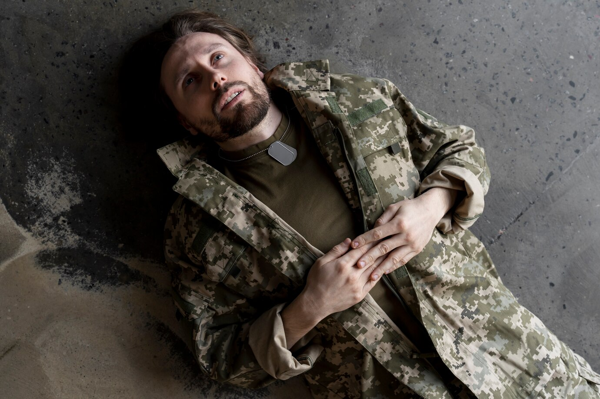

Transtorno de estresse pós-traumático
Transtorno de estresse pós-traumático (TEPT) é uma condição mental que se desenvolve após uma pessoa vivenciar um evento traumático. É caracterizado por reações intensas, desagradáveis e disfuncionais que podem causar sofrimento e prejuízos na vida pessoal e profissional.
Saiba maisCondição
A condição pode durar meses ou anos, com gatilhos que podem trazer de volta memórias do trauma acompanhadas por intensas reações emocionais e físicas.
Saiba maisEfeitos
Muitas pessoas são afetadas de maneira duradoura quando algo terrível acontece. Em algumas, os efeitos são tão persistentes e graves que são debilitantes e representam um transtorno.
Saiba maisSobre
Sintomas
Os sintomas do transtorno de estresse pós-traumático podem ser subdivididos em 4 categorias:
- Intrusões
- Esquiva
- Alterações negativas na cognição e humor
- Alterações na excitação e reatividade
Intrusões: são memórias ou pesadelos indesejáveis que repetem o evento desencadeante. As intrusões podem assumir a forma de "flashbacks", que podem ser desencadeados por imagens, sons, cheiros ou outros estímulos.
Esquiva: pessoas com transtorno de estresse pós-traumático podem evitar lembranças do trauma, como partes específicas da cidade ou atividades anteriormente favoritas.
Alterações negativas na cognição e humor: alterações cognitivas e de humor incluem desinteresse e desapego, cognições distorcidas, anedonia, autoculpa inapropriada e depressão.
Alterações na excitação e reatividade: pessoas com TEPT podem demonstrar excitação excessiva, irritabilidade e reatividade, ou podem parecer entorpecidas e distantes.
Apoio
Locais de Ajuda
Locais de apoio à sua saúde
-
CAPS
Oferecem assistência multiprofissional e cuidado terapêutico. O CAPS municipal é responsável por encaminhar pacientes agudos para atendimento psiquiátrico de urgência. - RAPS A RAPS do SUS oferece pontos de atenção para pessoas com transtornos mentais e/ou com problemas decorrentes do uso de drogas..
- Clínicas psiquiátricas Destinadas a tratar pessoas que estão em crise, ou seja, em um estado de descontrole em relação ao seu transtorno mental
Além disso, existem instituições como o Hospital Santa Mônica, que oferece recursos da psiquiatria moderna e uma equipe multidisciplinar para tratar pacientes com transtornos mentais

Serviços de Saúde Pública para TEPT
Os Serviços de Saúde Pública para Transtorno de Estresse Pós-Traumático (TEPT) podem incluir uma série de iniciativas que visam oferecer suporte a diagnóstico, tratamento, e intervenções de apoio comunitário. Aqui estão alguns exemplos:
- Clínicas de Saúde Mental.
- Programas de Intervenção Precoce.
- Linhas de Apoio e Serviços Telefônicos.
- Treinamento e Educação em Saúde Mental.

Grupos de Apoio/ONGS
Aqui estão algumas informações sobre grupos de apoio já existentes, com foco em organizações e iniciativas reconhecidas no Brasil e internacionalmente:
- Associação Brasileira de Assistência às Vítimas de Violência (ABAVV)
- Associação Brasileira de Psiquiatria (ABP) Website: www.abp.org.br
- Projeto “Luta Pela Vida” Website: www.lutapelavida.org.br
- Veterans Affairs (VA) - EUA Website: www.ptsd.va.gov
- Reddit Website: www.reddit.com/r/PTSD
Universidades e Centros de Pesquisa (Brasil)
- Universidade de São Paulo (USP).
- Universidade Estadual de Campinas (UNICAMP).
- Universidade Federal de Minas Gerais (UFMG).
- Universidade Federal do Rio de Janeiro (UFRJ).
Instituto de Psicologia (IPUSP)
Hospital das Clínicas de São Paulo.
Faculdade de Ciências Médicas.
Faculdade de Medicina.
A UFRJ tem programas de pesquisa interdisciplinar em saúde mental, incluindo o estudo do TEPT em diferentes grupos populacionais.

Filhos do quarto
"Filhos do Quarto", de Robson Araújo, aborda dores emocionais e traumas no contexto familiar, simbolizados pelo quarto como espaço de proteção e aprisionamento. A obra dialoga com o TEPT ao explorar temas como o impacto do sofrimento nas relações, o isolamento emocional e o legado intergeracional de traumas. Assim como no transtorno, há uma busca por compreensão e superação das marcas psicológicas, refletindo sobre a complexidade das experiências humanas e suas consequências emocionais.
Formas de
tratamento
Psicoterapia:
Terapia Cognitivo-Comportamental (TCC): Ajuda a modificar padrões de pensamento e comportamentos associados ao trauma.
Terapia de Exposição: Envolve a exposição gradual às lembranças do trauma em um ambiente seguro.
Terapia EMDR (Dessensibilização e Reprocessamento por Movimento Ocular): Ajuda a processar memórias traumáticas.Medicação
Antidepressivos (como inibidores seletivos da recaptação de serotonina - ISRS) são frequentemente prescritos para ajudar a aliviar os sintomas.
Grupos de Apoio
Participar de grupos com outras pessoas que também estão lidando com o TEPT pode proporcionar suporte emocional e compreensão.
Técnicas de Relaxamento
Práticas como meditação, yoga ou exercícios de respiração podem ajudar a reduzir a ansiedade e o estresse.
Mudanças no Estilo de Vida
Manter uma rotina saudável, incluindo exercícios regulares, alimentação balanceada e sono adequado, pode ajudar a melhorar o bem-estar geral.
Crença
Por mais que não pareça,as crenças podem ajudar, tanto crenças religiosas, ou até mesmo a crença em outras entidades como aliens
Testemunhos de psicólogos e terapeutas
Como pensa uma pessoa com TEPT?
Dados Brasil
Dados sobre a TEPT em São Paulo
Na Região Metropolitana de São Paulo, 1,6% da população diz ter sofrido de estresse pós-traumático nos últimos 12 meses e 3,2% já vivenciaram o problema ao longo da vida. Os dados são do estudo Correlação e Prevalência de Transtornos do Estresse Pós-traumático na Região Metropolitana de São Paulo, que foram divulgados na edição de dezembro do Journal of Psychiatric Research.O que pode causar TEPT?
Os eventos estressores apontados como mais favoráveis para o desenvolvimento de situações traumáticas podem ser categorizados em três grandes grupos: eventos intencionais provocados pelo homem, eventos não-intencionais provocados pelo homem e eventos provocados pela natureza (Schiraldi, 1999). No primeiro grupo, entre os eventos intencionais provocados pelo homem, podemos citar: guerra civil, incesto, estupro, sedução, tortura física ou emocional, assalto, crime violento sofrido pela própria pessoa ou por pessoas afetivamente significativas, terrorismo, participação em atrocidades violentas, alcoolismo e uso de drogas, suicídio, mutilação por acidente ou provocada por outro indivíduo. No segundo grupo, com relação aos eventos não intencionais provocados pelo homem, encontram-se incêndios, explosões, queda de pontes e viadutos, acidentes automobilísticos, aéreos e aquáticos e perda de parte do corpo em ambiente de trabalho. No terceiro grupo, entre os desastres naturais, incluem-se tornados, avalanche, erupção vulcânica, ataques de animais, terremoto, furacões, enchentes e epidemias (Schiraldi, 1999).Impacto Cerebral
A fisiopatologia exata do desenvolvimento de TEPT não é bem esclarecida. Alguns estudos que utilizaram imagens de ressonância magnética mostraram que ocorre diminuição do volume do hipocampo, estrutura responsável por consolidar a memória. Ainda, são alterações na amígdala esquerda e do córtex cingulado anterior nestes pacientes. Como resultado disso, o paciente com TEPT é incapaz de diferenciar situações inofensivas daquelas que provocaram o trauma real. Como exemplo disso, fogos de artifício podem ser facilmente confundidos com explosões de combate. Além disso, detectaram também aumento dos níveis de norepinefrina central com receptores adrenérgicos centrais regulados para baixo e níveis reduzidos de glicocorticoides.Profissionais
Conselhos de Profissionais

Friedrich Nietzsche
filósofo
Aquilo que não me mata me torna mais forte.

Aristóteles
filósofo
"A arte de viver consiste em tirar o maior bem do maior mal."

Carl Jung
Psiquiatra
Eu não sou o que aconteceu comigo, eu sou o que escolho me tornar.

Gabor Maté
Médico
Quando não podemos escapar do sofrimento, aprendemos a carregar nossas dores dentro de nós.

Mary Frances O’Connor
Pensadora
O cérebro tenta constantemente construir sentido e encontrar novas maneiras de viver com o que foi perdido.
Principais
Causas
Experiências de extrema violência
- Pessoas que já experienciaram situações de agressividade desenvolvem o transtorno pela intensidade da ação e em alguns casos pela frequência.
Abuso físico ,sexual e emocional
- pessoas que foram abusadas de alguma forma, especialmente na infância, têm alto risco de sofrerem este transtorno em algum momento de suas vidas, deixando cicatrizes tanto físicas quanto mentais.
Acidentes graves
- pessoas que passaram e sobreviveram a acidentes de carro,desastres naturais,incêndios ou outros eventos que colocam a vida do indivíduo em risco. também estão expostos ao transtorno
Perdas
- perder um parente, um amigo ou uma pessoa que você se importa pode ser um motivo pelo desenvolvimento do transtorno, principalmente quando a perda é repentina.
Dúvidas
Perguntas Frequentes
Você pode suspeitar de TEPT se tiver vivenciado um evento traumático e apresentar sintomas persistentes por mais de um mês, como: reviver o trauma (flashbacks ou pesadelos), evitar situações ou lembranças relacionadas, alterações emocionais (ansiedade, irritabilidade ou culpa) e sintomas físicos, como insônia ou hipervigilância. Para um diagnóstico preciso, consulte um profissional de saúde mental.
A small river named Duden flows by their place and supplies it
with the necessary regelialia. It is a paradisematic country, in
which roasted parts of sentences fly into your mouth.
Para melhorar o TEPT, é importante combinar diferentes abordagens. A psicoterapia, especialmente a terapia cognitivo-comportamental, é muito eficaz, pois ajuda a reformular pensamentos e emoções relacionados ao trauma. Técnicas como a Terapia de Exposição ou o EMDR (Dessensibilização e Reprocessamento por Movimentos Oculares) também são amplamente utilizadas. Em alguns casos, o uso de medicação, como antidepressivos, pode aliviar os sintomas. Além disso, práticas de autocuidado, como meditação, exercícios físicos e estratégias de relaxamento, ajudam a reduzir a ansiedade e melhorar o bem-estar geral.
Grupo
Desenvolvedores do Site

Arthur Gael Araújo Pinho de Almeida
DesenvolvedorEvellyn dos Santos Furtado
DesenvolvedorGabriela Romano
DesenvolvedorJoão Henrique de Andrade Gimenes
DesenvolvedorJoão Paulo Souza Azevedo
DesenvolvedorBlog
Notícias Recentes

Contato
Contato
Endereço
R. Bélgica, 88 - Jardim Alvorada, Ribeirão Pires - SP
Telefone
+1 5589 55488 55
trabalhoiweportugues@gmail.com